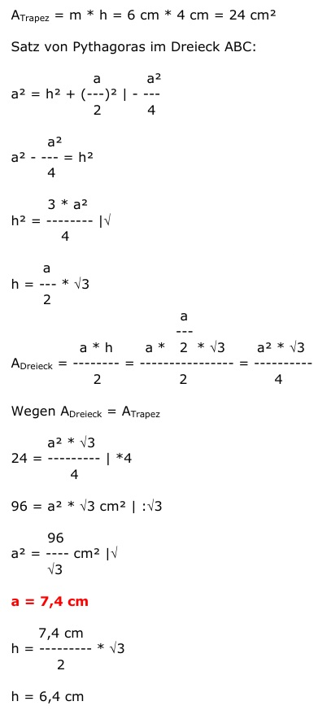
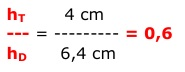
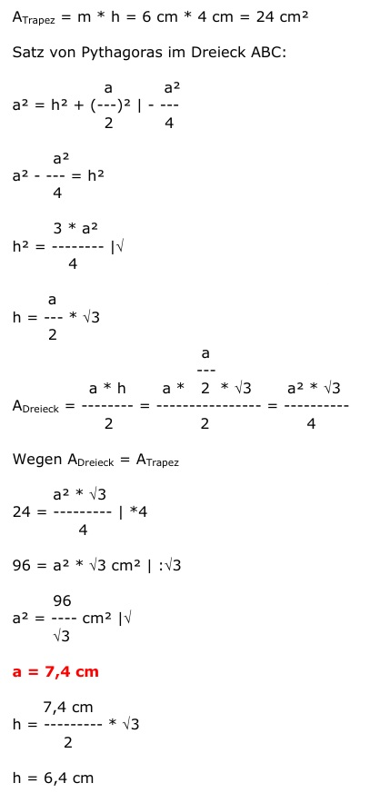
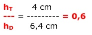

Flächenberechnung Aufgabe 93
Ein Trapez mit einer Mittellinie von 6 cm und einer
Höhe von 4 cm soll einem gleichseitigen Dreieck
flächengleich sein.
Berechnen Sie die Länge a einer Dreieckseite und
das Verhältnis der beiden Höhen.
 



Flächenberechnung Aufgabe 93 Ein Trapez mit einer Mittellinie von 6 cm und einer Höhe von 4 cm soll einem gleichseitigen Dreieck flächengleich sein. Berechnen Sie die Länge a einer Dreieckseite und das Verhältnis der beiden Höhen.